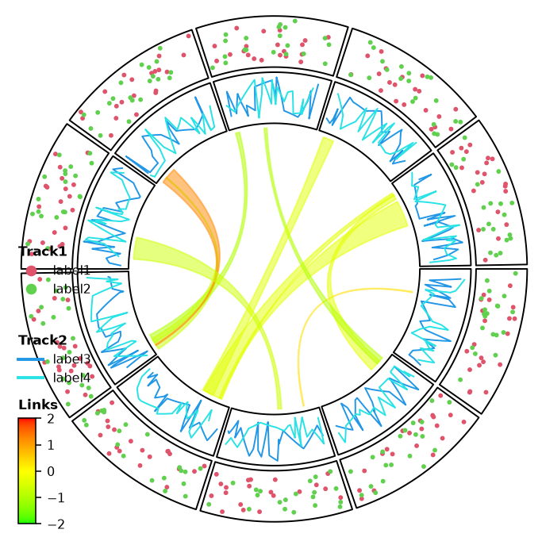
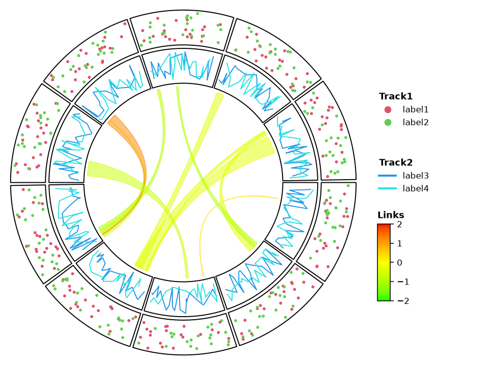

4 Legends#
circlize provides complete freedom for users to
design custom circular graphics through panel_fun
callbacks. However, because circlize renders arbitrary
user-supplied primitives rather than owning a high-level plot grammar,
it does not automatically generate legends for tracks or links.
In circlize-py, every circular plot is drawn onto a
standard Matplotlib Axes. That means legends can be built
and arranged seamlessly using Matplotlib’s native
fig.legend(), fig.colorbar(),
GridSpec, and explicit figure axes—requiring only a few
lines of Python. In the book’s figure helper module
(_common.py), two thin
wrappers—add_discrete_legend() and
add_colorbar()—illustrate this pattern directly on top of
Matplotlib’s Line2D/Patch artists and
ScalarMappable colorbars.
As a running example, we construct a circular plot with two tracks
and interior links. The first track plots two groups of points, the
second track plots two groups of lines, and the links use a continuous
ColorRamp2 mapping. We wrap the circular plot in a reusable
function draw_example_circle() so we can pair it with
several legend layouts.
import numpy as np
import matplotlib.pyplot as plt
from circlize import add_transparency, circos, color_ramp2
col_fun = color_ramp2([-2.0, 0.0, 2.0], ["green", "yellow", "red"])
def draw_example_circle(seed: int = 12345) -> None:
rng = np.random.default_rng(seed)
sectors = list("abcdefghij")
circos.initialize(sectors, xlim=(0.0, 1.0))
def panel_track1(x, y):
circos.points(rng.uniform(size=20), rng.uniform(size=20), cex=0.5, pch=16, col=2)
circos.points(rng.uniform(size=20), rng.uniform(size=20), cex=0.5, pch=16, col=3)
circos.track(ylim=(0.0, 1.0), panel_fun=panel_track1)
def panel_track2(x, y):
circos.lines(np.sort(rng.uniform(size=20)), rng.uniform(size=20), col=4)
circos.lines(np.sort(rng.uniform(size=20)), rng.uniform(size=20), col=5)
circos.track(ylim=(0.0, 1.0), panel_fun=panel_track2)
for _ in range(10):
s1 = str(rng.choice(sectors))
s2 = str(rng.choice(sectors))
p1 = np.sort(rng.uniform(size=10))[:2]
p2 = np.sort(rng.uniform(size=10))[:2]
# Pass transparency=0.5 explicitly to match semi-transparent ribbons
col = add_transparency(col_fun(float(rng.normal())), transparency=0.5)
circos.link(s1, p1, s2, p2, col=col)
circos.clear()4.1 Building discrete and continuous legends with Matplotlib#
To render legends alongside any circlize-py figure:
- Discrete point, line, or patch legends
(
fig.legend/add_discrete_legend): Build proxymatplotlib.lines.Line2Dormatplotlib.patches.Patchhandles usingcolor_to_hex()(so R palette indices like2–5and R color names resolve identically tocirclize-pytracks), and attach them withfig.legend(...). Callingfig.legend()multiple times appends independent legend boxes to the figure without replacing earlier legends (whereas callingax.legend()repeatedly on a singleAxesreplaces the previous legend unlessax.add_artist()is used). - Continuous colorbars (
fig.colorbar/add_colorbar): Sample aColorRamp2object across[vmin, vmax]into a MatplotlibLinearSegmentedColormap(colorramp_to_cmap()), wrap it inmatplotlib.cm.ScalarMappable(norm=Normalize(vmin, vmax), cmap=cmap), and draw it into a dedicated axes box[left, bottom, width, height]viafig.colorbar(sm, cax=cax).
from matplotlib.cm import ScalarMappable
from matplotlib.colors import LinearSegmentedColormap, Normalize
from matplotlib.lines import Line2D
from circlize import color_to_hex
def make_discrete_handles(items, kind="point"):
handles = []
for label, color in items:
hex_col = color_to_hex(color, include_alpha=True)
if kind == "point":
handles.append(
Line2D([0], [0], marker="o", linestyle="None",
markerfacecolor=hex_col, markeredgecolor=hex_col,
markersize=6.0, label=label)
)
elif kind == "line":
handles.append(Line2D([0], [0], color=hex_col, lw=2.0, label=label))
return handles
def colorramp_to_cmap(col_fun, vmin, vmax, n=256):
vals = np.linspace(vmin, vmax, n)
cols = [color_to_hex(col_fun(float(v)), include_alpha=True) for v in vals]
return LinearSegmentedColormap.from_list("circlize_ramp", cols, N=n)4.2 Overlaying legends on the figure canvas#
Because fig.legend() and fig.add_axes() use
normalized figure coordinates ([0, 1] ×
[0, 1]), legends can be placed directly in the corners of
the circular canvas. The helper add_discrete_legend() wraps
proxy handle creation and fig.legend(), while
add_colorbar() creates a small colorbar axes at
rect=[left, bottom, width, height].
fig = plt.figure(figsize=(5.0, 5.0), dpi=140, facecolor="white")
ax = fig.add_axes([0.04, 0.04, 0.92, 0.92])
plt.sca(ax)
draw_example_circle()
add_discrete_legend(
fig, [("label1", 2), ("label2", 3)],
kind="point", title="Track1",
loc="lower left", bbox_to_anchor=(0.02, 0.43),
)
add_discrete_legend(
fig, [("label3", 4), ("label4", 5)],
kind="line", title="Track2",
loc="lower left", bbox_to_anchor=(0.02, 0.27),
)
add_colorbar(
fig, col_fun, vmin=-2.0, vmax=2.0,
rect=[0.04, 0.04, 0.032, 0.19],
title="Links", ticks=[-2, -1, 0, 1, 2],
)
As the stacked corner legends demonstrate, overlaying multiple legends directly on a compact square canvas leaves them overlapping the outer circular tracks. One quick mitigation on a wider canvas is to split the legends across different corners—for example, placing the discrete track legends in the lower-left corner and the continuous link colorbar in the lower-right corner.
fig = plt.figure(figsize=(6.2, 5.0), dpi=140, facecolor="white")
ax = fig.add_axes([0.06, 0.04, 0.88, 0.92])
plt.sca(ax)
draw_example_circle()
add_discrete_legend(
fig, [("label1", 2), ("label2", 3)],
kind="point", title="Track1",
loc="lower left", bbox_to_anchor=(0.02, 0.19),
)
add_discrete_legend(
fig, [("label3", 4), ("label4", 5)],
kind="line", title="Track2",
loc="lower left", bbox_to_anchor=(0.02, 0.03),
)
add_colorbar(
fig, col_fun, vmin=-2.0, vmax=2.0,
rect=[0.89, 0.05, 0.028, 0.22],
title="Links", ticks=[-2, -1, 0, 1, 2],
)
4.3 Partitioning space with
GridSpec#
Corner placement still breaks down when legends are tall or numerous.
The cleanest, most reliable solution is to partition the Matplotlib
figure with fig.add_gridspec() so the circular plot
occupies one region and the legends live in their own non-overlapping
panel.
First, use a 1 × 2 GridSpec
(width_ratios=[4.2, 1.2]) to reserve a dedicated right-side
legend column. Activate the left subplot with
plt.sca(ax_circ) before calling
draw_example_circle(), then read the right subplot’s
normalized figure box (pos = ax_leg.get_position()) to
anchor the discrete legends and colorbar axes cleanly inside the right
column:
fig = plt.figure(figsize=(7.0, 5.2), dpi=140, facecolor="white")
gs = fig.add_gridspec(
1, 2,
width_ratios=[4.2, 1.2],
left=0.02, right=0.96, top=0.97, bottom=0.03, wspace=0.04,
)
ax_circ = fig.add_subplot(gs[0, 0])
plt.sca(ax_circ)
draw_example_circle()
ax_leg = fig.add_subplot(gs[0, 1])
ax_leg.set_axis_off()
pos = ax_leg.get_position()
add_discrete_legend(
fig, [("label1", 2), ("label2", 3)],
kind="point", title="Track1",
loc="upper left", bbox_to_anchor=(pos.x0, pos.y0 + 0.78 * pos.height),
)
add_discrete_legend(
fig, [("label3", 4), ("label4", 5)],
kind="line", title="Track2",
loc="upper left", bbox_to_anchor=(pos.x0, pos.y0 + 0.59 * pos.height),
)
add_colorbar(
fig, col_fun, vmin=-2.0, vmax=2.0,
rect=[pos.x0 + 0.012, pos.y0 + 0.16 * pos.height, 0.025, 0.22 * pos.height],
title="Links", ticks=[-2, -1, 0, 1, 2],
)
Legends can just as easily sit below the circular plot by switching
to a 2 × 1 GridSpec
(height_ratios=[4.3, 1.0]), passing ncol=2 to
add_discrete_legend(), and setting
orientation="horizontal" on
add_colorbar():
fig = plt.figure(figsize=(5.6, 6.4), dpi=140, facecolor="white")
gs = fig.add_gridspec(
2, 1,
height_ratios=[4.3, 1.0],
left=0.03, right=0.97, top=0.98, bottom=0.04, hspace=0.03,
)
ax_circ = fig.add_subplot(gs[0, 0])
plt.sca(ax_circ)
draw_example_circle()
ax_leg = fig.add_subplot(gs[1, 0])
ax_leg.set_axis_off()
pos = ax_leg.get_position()
add_discrete_legend(
fig, [("label1", 2), ("label2", 3)],
kind="point", title="Track1", ncol=2,
loc="center left",
bbox_to_anchor=(pos.x0 + 0.02 * pos.width, pos.y0 + 0.50 * pos.height),
)
add_discrete_legend(
fig, [("label3", 4), ("label4", 5)],
kind="line", title="Track2", ncol=2,
loc="center left",
bbox_to_anchor=(pos.x0 + 0.34 * pos.width, pos.y0 + 0.50 * pos.height),
)
add_colorbar(
fig, col_fun, vmin=-2.0, vmax=2.0,
rect=[pos.x0 + 0.68 * pos.width, pos.y0 + 0.42 * pos.height,
0.28 * pos.width, 0.16 * pos.height],
title="Links", ticks=[-2, -1, 0, 1, 2], orientation="horizontal",
)
See the circos.heatmap()
chapter for an extended multi-track example combining eight discrete
and continuous legends alongside a complex circular heatmap.